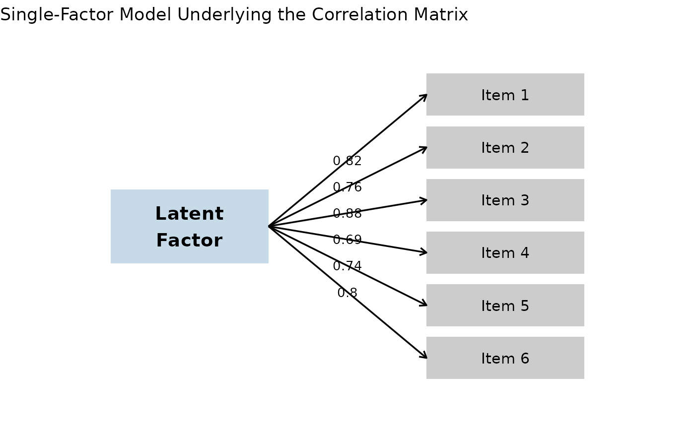

How `makeCorrAlpha()` Works: Then and Now
Hume Winzar
February 2026
Source:vignettes/makeCorrAlpha_explainer.Rmd
makeCorrAlpha_explainer.RmdIntroduction
One of the most-used functions in LikertMakeR is
makeCorrAlpha().
Its purpose is simple:
Given a number of items and a target Cronbach’s alpha, generate a correlation matrix that has approximately that reliability.
Behind that simple description are two quite different
strategies.
Earlier versions of the function used one approach. The current version
uses a new constructive method that more closely reflects how real
psychometric scales are built.
This note explains both approaches.
The Goal
Suppose we want:
- 8 items
- Cronbach’s alpha = 0.85
Cronbach’s alpha depends on the average inter-item correlation.
So the practical task is:
Build a correlation matrix where the average correlation between items corresponds to alpha = 0.85.
There is an important constraint:
A valid correlation matrix must be Positive Definite.
In simple terms, this means the matrix must represent a mathematically-valid set of variables. Not every table of numbers between −1 and +1 qualifies.
That constraint is what makes the problem interesting.
The Previous Approach: Random + Repair
Earlier versions of makeCorrAlpha() worked in two
stages.
Step 1: Generate Random Correlations
The function would:
- Compute the average correlation required for the requested alpha.
- Generate many random values around that average.
- Insert them into a symmetric matrix.
- Set the diagonal values to 1.
At this point, the matrix looked like a correlation matrix.
But there was a problem.
Randomly assembled correlation matrices are often Not Positive Definite.
That means they do not represent a mathematically valid set of variables.
Step 2: Adjust Until Valid
To fix this, the function repeatedly:
- Swapped correlation values,
- Checked the matrix eigenvalues,
- Tested whether the matrix had become positive definite.
This worked very well for small to moderate numbers of items (for example, 4–12 items), which covers most applied research examples.
However, as the number of items grew:
- The search process could become slower,
- Many swaps might be required,
- Occasionally, no valid solution was found within the iteration limit.
In short:
The method generated something random and then repaired it.
It was effective, but indirect.
- It was slow
- It often produced a correlation matrix which had eigenvalues where more than two values exceeded ‘1’, which often implies that the data represents a multi-factor data structure. That is, it was not represent a unidimensional construct.
The New Approach: Construct Instead of Repair
The current version of makeCorrAlpha() uses a different
idea.
Instead of generating correlations randomly and hoping they form a valid structure, it starts from a simple model of how psychometric scales actually work.
How Real Scales Work
Most multi-item scales in psychology, marketing, and education are built around a single underlying construct, such as:
- Attitude
- Satisfaction
- Trust
- Anxiety
- Engagement
Each item reflects that underlying factor to some degree.
In statistical language, this is a one-factor model.
Under this model:
- Each item has a loading (how strongly it reflects the construct).
- Correlations between items arise because they share the same underlying factor.
This guarantees something important:
If items are generated from a common factor structure, the resulting correlation matrix is automatically positive definite.
No repair is required.
The New Method
The new version of makeCorrAlpha() works like this:
- Compute the average correlation implied by the requested alpha.
- Generate item loadings that vary around a central value.
- Construct the correlation matrix directly from those loadings.
- Make small adjustments if necessary to ensure the target alpha is met.
Because the matrix is built from a factor model, it is valid by construction.
There is no swapping, no repairing, and no iterative reshuffling of entries.
A Comparison
| Previous Version | Current Version |
|---|---|
| Target alpha | Target alpha |
| ↓ | ↓ |
| Random correlations generated | Implied average correlation |
| ↓ | ↓ |
| Matrix assembled | Generate item loadings (one-factor model) |
| ↓ | ↓ |
| Is it positive definite? | Construct correlation matrix directly |
| ↓ | ↓ |
| If not → swap correlations → test again | Valid by design |
| ↓ | |
| Eventually valid matrix | |
The difference is conceptual as much as computational.
- Old method: generate first, repair later.
- New method: construct from a coherent measurement model.
Why This Better Reflects Psychometric Scales
In real measurement:
- Items are not randomly related.
- They share a common construct.
- Their correlations arise from that shared source.
The new generator mirrors this logic.
Instead of treating correlations as independent numbers that must be forced into a valid shape, it assumes:
Items are indicators of a single latent factor.
That assumption aligns closely with classical test theory and common practice in scale development.

What Has Changed for Users?
For most users, nothing.
For most everyday uses — especially with moderate numbers of items — the results will look very similar.
However, the new method:
- Is more stable for larger numbers of items.
- Avoids rare non-convergence situations.
- Produces smoother, more realistic correlation patterns.
- Guarantees a positive-definite matrix by construction.
The precision argument has been deprecated and replaced
with an alpha_noise argument.
The nature of the variance argument has changed, but not
its purpose.
The sort_cors argument has been deprecated.
Understanding variance and alpha_noise
The redesigned makeCorrAlpha() function now includes two
independent controls:
variance — How different are the items?
The variance argument controls how much the items differ from each other in strength.
Smaller values produce very similar items (nearly equal correlations).
Larger values produce more heterogeneous items (wider spread of correlations).
For most teaching and applied examples:
variance = 0.05→ near-parallel itemsvariance = 0.10→ modest heterogeneity (recommended default)variance = 0.15→ strong heterogeneityvariance > 0.20→ very strong dispersion
Importantly, variance changes the pattern of correlations, but not the requested reliability level.
alpha_noise — How exact should alpha be?
The alpha_noise argument controls whether the requested
Cronbach’s alpha is reproduced exactly, or allowed to vary slightly
across runs.
alpha_noise = 0→ exact, deterministic alphaalpha_noise = 0.02→ very small variationalpha_noise = 0.05→ moderate variationalpha_noise = 0.10→ substantial variation
This can be useful in teaching or simulation settings where you want each run to look slightly different, rather than reproducing the same reliability every time.
In summary:
variancecontrols item heterogeneity.alpha_noisecontrols reliability variability.
These two parameters operate independently, allowing you to simulate realistic measurement structures while maintaining control over reliability.
Summary
The previous method worked well and served most practical purposes.
The new method is conceptually cleaner.
Instead of building a matrix and fixing it, we now build it correctly from the start — using the same underlying logic that real psychometric scales are based on.
It is also way faster.
In short:
The new
makeCorrAlpha()does not just generate correlations.
It generates a measurement model.
And that is a more natural foundation for Likert-scale simulation.